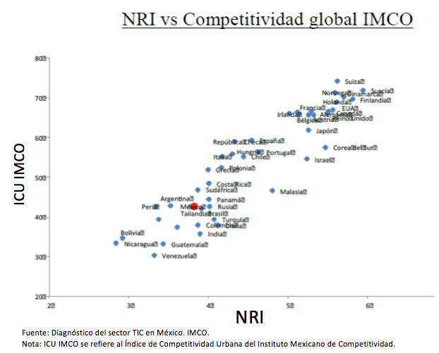
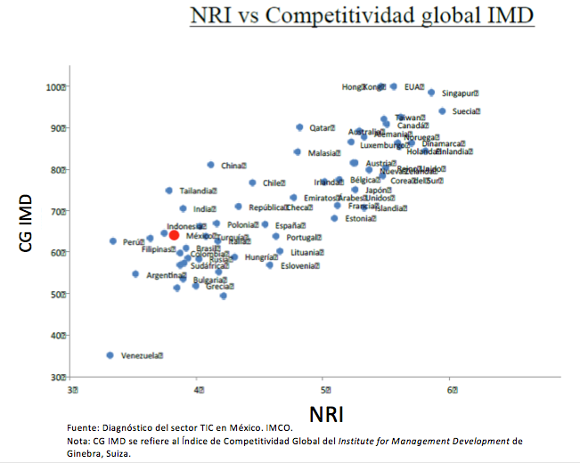
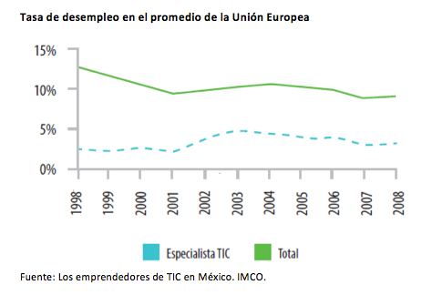
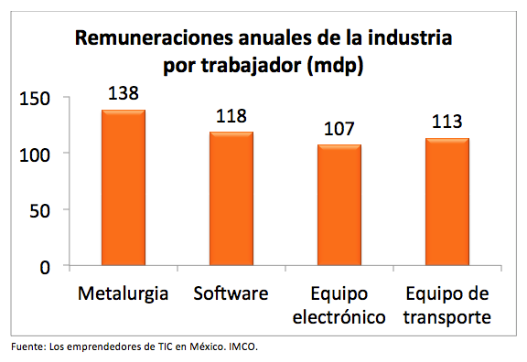
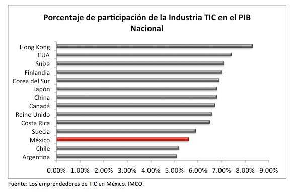
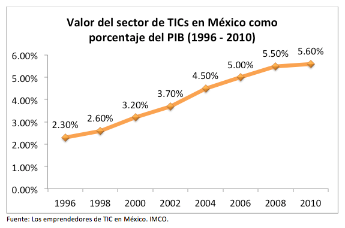

Mientras el mundo creció 4% en la década de 2000 a 2010, el sector de las Tecnologías de la Información y Comunicación (TICs) creció 5.7% (IMCO, 2012). La realidad es que la implementación de las TICs en las actividades económicas se ha vuelto indispensable para el óptimo desarrollo de una región: su alta inversión en la investigación y desarrollo (15% de su ganancia) y su transversalidad son las características que convierten a las TICs en un catalizador de productividad e innovación constante para otras industrias.
Estudios demuestran la íntima relación entre la competitividad y el uso y aprovechamiento de las TICs. Los diagramas de dispersión a continuación ilustran la relación positiva entre las calificaciones de los países en el Networked Readiness Index, índice del Fondo Monetario Internacional que mide el desarrollo del sector TIC en 148 países, y su calificación en distintos índices de competitividad. En ambos diagramas se aprecia cómo a mayor desarrollo de las TICs, mayor competitividad.
 Las características laborales del sector son también atractivas: en la Unión Europea, la tasa de desempleo para los profesionistas del sector de las TICs es aproximadamente 10% menor a la tasa de desempleo promedio y en Estados Unidos entre 1990 y 2011 la tasa de crecimiento del empleo en el sector TIC fue de 10.4%. En cuanto a México, las personas dedicadas a las TICs ganan en promedio 118,000 pesos al año y se considera como uno delos sectores mejor pagados.
 A nivel Internacional las TICs siguen tomando importancia: en 2013 el 50% del capital de riesgo de Estados Unidos fue dirigido al sector TIC y en dos tercios de los países de la OECD, más del 95% de las empresas cuenta con internet. Esto sin mencionar que la contribución de las TICs en el PIB es cada vez más alta. En la gráfica inferior se expone la participación de las TICs en el PIB de diferentes países:
Comparado con las potencias, México tiene una baja participación de las TICs en el PIB: mientras las TICs en México representan el 5.6% y el software 0.7%, Estados Unidos tiene una participación de más 7% por parte de las TICs del cual 4% pertenece al software.
Otros rezagos de México en este sector se mencionan en el NRI 2014, en el cual México ocupa el lugar 79 de 148, es decir 16 lugares debajo de la posición ocupada en 2013. Entre los pilares peor calificados en el índice tenemos infraestructura y contenido digital, accesibilidad, habilidades e innovación en los negocios.
A pesar del retraso la participación de las TICs en el PIB creció 75% en la década de 2000 a 2010 y consultoras e Institutos internacionales como KPMG y el Institute for Management Development aseguran queMéxico destaca de entre los países emergentes en el desarrollo de las TICs. En la siguiente gráfica se aprecia el crecimiento de la participación de las TICs en el PIB de México:
Áreas de oportunidad en los modelos educativos
Para impulsar de manera óptima el uso de TICs en todas las industrias, los emprendedores de empresas tecnológicas identificaron la necesidad de cambiar los modelos educativos unidimensionales y desarrollar en todas las carreras habilidades de matemáticas, programación y diseño de software; esto además de competencias gerenciales y de alta dirección. El dominar al menos el idioma inglés, es también esencial para los profesionistas del sector.
A continuación algunos ejemplos de plan de estudios que abarcan todas estas habilidades:
Ingeniero en Software
- Universidad Autónoma de Guadalajara (UAG)
- Conocimientos de administración, evaluación, finanzas y alta dirección.
- Metodologías de investigación
- Habilidades técnicas: bases de datos, animación, redes, modelado de hardware, diseño de software, etc.
- Idiomas: Inglés avanzado
- Ir a la página de la carrera en el sitio web de la UAG.
Ingeniero en Tecnologías de Información y Comunicaciones
- ITESM
- "Es un profesionista con visión innovadora y con base sólida en arquitectura de Tecnologías de Información que le permite la implantación, el mantenimiento, la operación y la administración de soluciones sustentadas en electrónica, computación y sistemas de información, integradas al servicio de personas y organizaciones ante la nueva y dinámica sociedad de la era digital."
- Ir a la página de la carrera en el sitio web del ITESM.